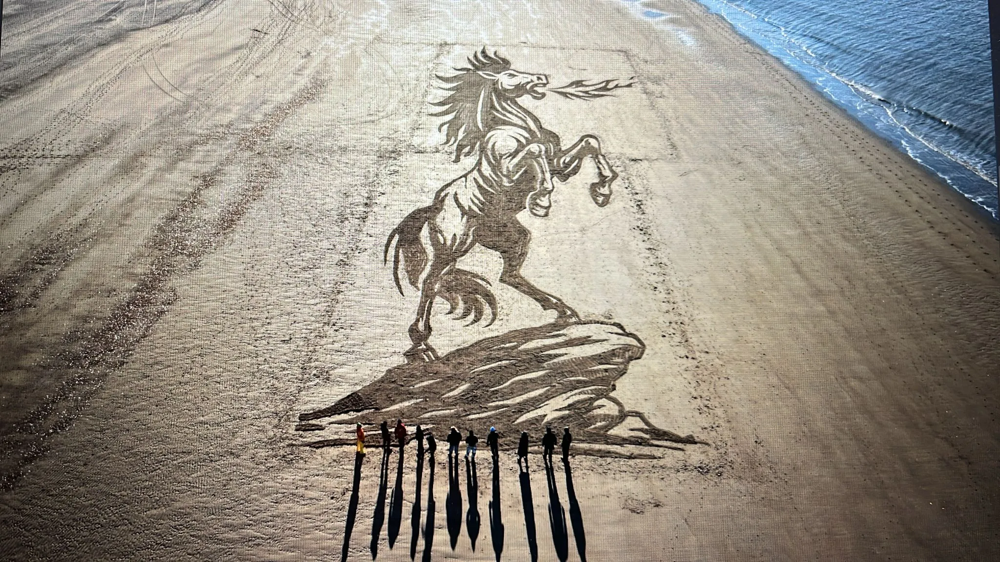
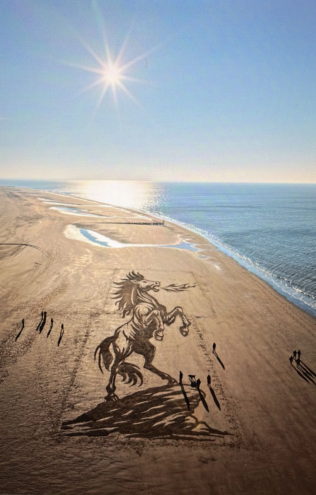

▶Watch Film (2)

The Fire Horse
Drawn on the beach at low tide to welcome the Year of the Fire Horse, before the evening waves washed it away.
Nieuw-Haamstede, Zeeland · 2025
120 × 80 m · Beach Drawing · 4 Photos · 2 Films